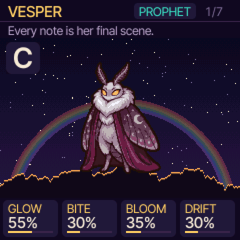
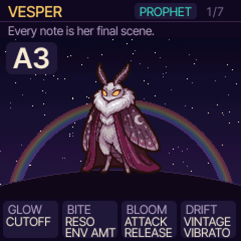
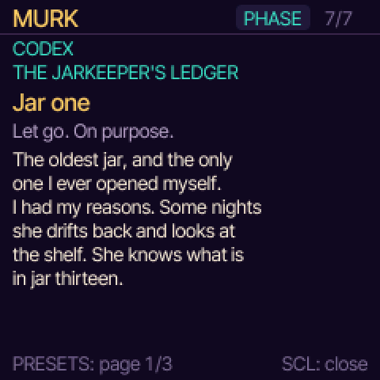
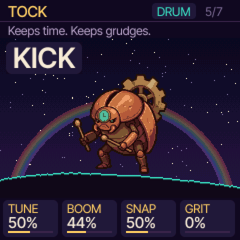
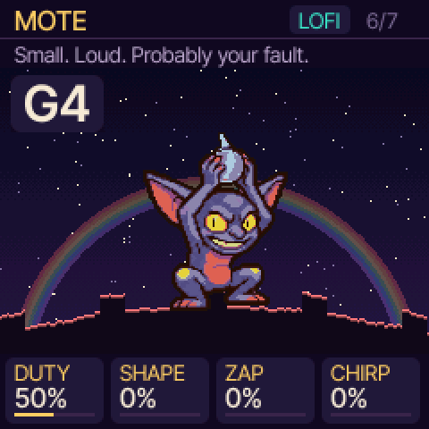
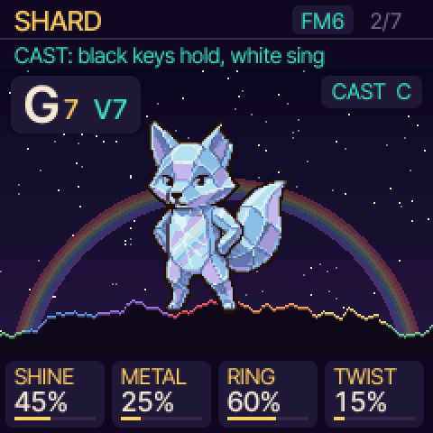
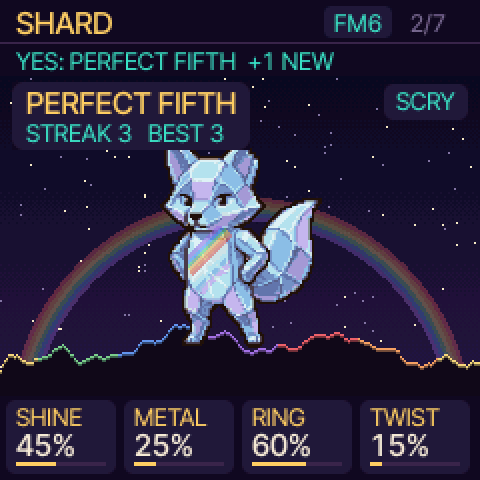
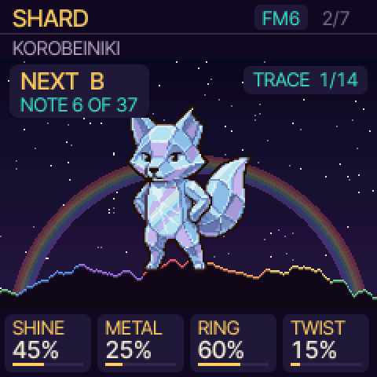
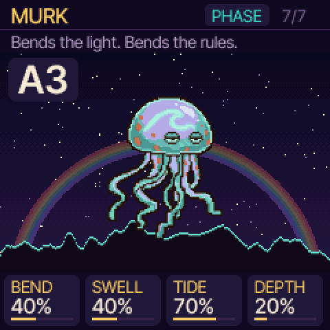

Somewhere in the hills lives the Keeper, who catches sounds in glass jars and keeps them on shelves in a room with no light.
One night a small storm broke out of jar twelve. The jar shattered, and its glass walked off with the moonlight still inside it. A moth came to the light, as moths do. More of them have been getting out ever since, and nobody knows why the sounds are kept.
Every character has a page in the Keeper's ledger, in the Keeper's own voice. Read them and the pieces start to fit.

VesperA C chord, named as she plays it

Hold EDITThe real settings under each knob

The codexThe Keeper's ledger, page one

TockEvery key a drum, named as it hits

MoteA square wave, drawn on the horizon

CASTA black key holds G7, the V7 of C

SCRYThe ear trainer: a perfect fifth, found

TRACEKorobeiniki, one key at a time

MurkJar one. She came back.
It also covers chords and Roman numerals, the circle of fifths, ear training for intervals and chords, and learning tunes by ear. It's free and there's no account to make. The browser version runs on most computers, tablets and phones.